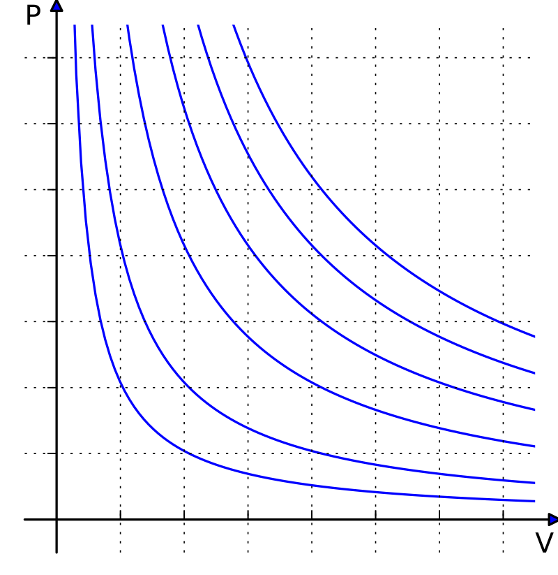
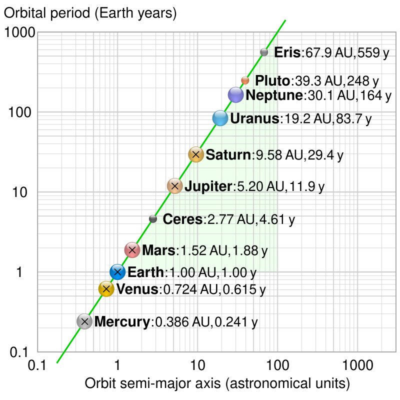
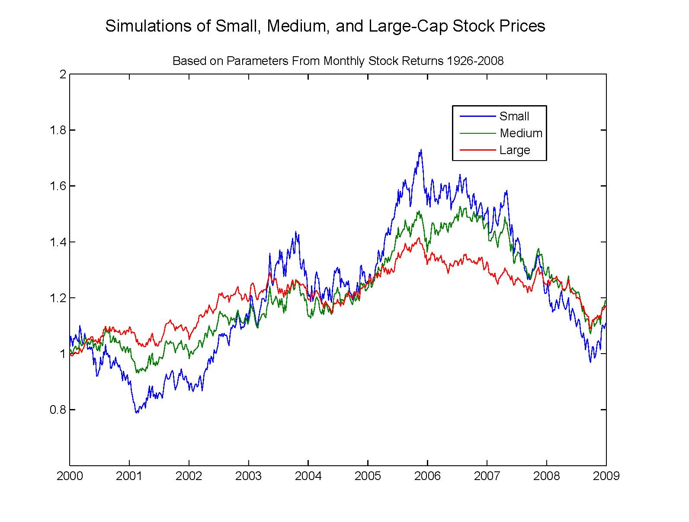

PSTAT 100: Lecture 12
Hypothesis Testing, Part II
Department of Statistics and Applied Probability; UCSB
Summer Session A, 2025
\[ \newcommand\R{\mathbb{R}} \newcommand{\N}{\mathbb{N}} \newcommand{\E}{\mathbb{E}} \newcommand{\Prob}{\mathbb{P}} \newcommand{\F}{\mathcal{F}} \newcommand{\1}{1\!\!1} \newcommand{\comp}[1]{#1^{\complement}} \newcommand{\Var}{\mathrm{Var}} \newcommand{\SD}{\mathrm{SD}} \newcommand{\vect}[1]{\vec{\boldsymbol{#1}}} \newcommand{\Cov}{\mathrm{Cov}} \newcommand{\iid}{\stackrel{\mathrm{i.i.d.}}{\sim}} \]
Recap
Last lecture, we started our discussion on hypothesis testing.
In hypothesis testing, we seek to use data to assess the validity of a claim about a particular population parameter.
- E.g. we wish to use data to determine whether we believe the true proportion of polydactyl cats to be 10% or not.
The null hypothesis represents the “status quo,” or the claim we are given.
The alternative hypothesis represents an alternative to the null, and should be selected before beginning testing.
Recap
For example, if we want to test H0: θ = θ0 where θ denotes an arbitrary population parameter, the four choices of alternatives become
- Lower-Tailed: HA: θ < θ0
- Upper-Tailed: HA: θ > θ0
- Two-Tailed (aka Two-Sided): HA: θ ≠ θ0
- Simple-vs-Simple: HA: θ = θA for some θA ≠ θ0
Again, we need to select one of these to be our alternative.
Last lecture, we considered hypothesis tests for a population proportion. Let’s consider hypothesis testing for a mean.
Just as our tests for the proportion involved the sample proportion, our tests for the mean will depend on the sample mean.
Hypothesis Test for a Mean
Known Population Variance
Null: µ = µ0. Assume the population variance σ2 is known.
Upper-Tailed Test: Reject H0 if \(\displaystyle \frac{\overline{X}_n - \mu_0}{\sigma / \sqrt{n}} > \Phi^{-1}(1 - \alpha)\)
Lower-Tailed Test: Reject H0 if \(\displaystyle \frac{\overline{X}_n - \mu_0}{\sigma / \sqrt{n}} < \Phi^{-1}(\alpha)\)
Two-Sided Test: Reject H0 if \(\displaystyle \left| \frac{\overline{X}_n - \mu_0}{\sigma / \sqrt{n}} \right| > \Phi^{-1}\left(1 - \frac{\alpha}{2} \right)\)
Hypothesis Test for a Mean
Unknown Population Variance
Null: µ = µ0. Assume the population variance σ2 is unknown
Upper-Tailed Test: Reject H0 if \(\displaystyle \frac{\overline{X}_n - \mu_0}{S_n / \sqrt{n}} > F_{t_{n - 1}}^{-1}(1 - \alpha)\)
Lower-Tailed Test: Reject H0 if \(\displaystyle \frac{\overline{X}_n - \mu_0}{S_n / \sqrt{n}} < F_{t_{n - 1}}^{-1}(\alpha)\)
Upper-Tailed Test: Reject H0 if \(\displaystyle \left| \frac{\overline{X}_n - \mu_0}{S_n / \sqrt{n}} \right| > F_{t_{n - 1}}^{-1}\left(1 - \frac{\alpha}{2} \right)\)
\(S_n := \sqrt{(n - 1) \sum_{i=1}^{n} (X_i - \overline{X}_n)^2}\), and \(F_{t_{n - 1}}^{-1}(\cdot)\) denotes the inverse CDF of the tn-1 distribution.
Hypothesis Test for a Mean
p-Values
p-values are still defined in the same was as before: they are the probability of observing something as or more extreme (in the direction of the alternative) as what was actually observed.
Again, I find drawing a picture to be much more helpful than trying to memorize formulas and mathematical definitions!
Also, just as before, we reject the null if our p value falls below the level of significance.
Hypothesis Testing
Some Generalizations
Up until now, we’ve exclusively considered null hypotheses of the form H0: θ = θ0.
- Such a null is often referred to as a simple hypothesis
What happens if we have a more complex null, like H0: θ ≥ θ0?
It turns out that the “best” hypothesis test looks only at the boundary; that is, it is equivalent to use the null H0: θ = θ0 when testing H0: θ ≥ θ0 or H0: θ ≤ θ0 !
Your Turn!
Your Turn!
“Industrial wastewater discharge” refers to liquid waste produced as a result of industrial processes. Companies are often required to register for permits to produce industrial wastewater, and these permits are sometimes contingent on the average concentration of pollutants in the wastewater.
Suppose that the state of Gauchonia only offers permits to companies whose wastewater has an average pollutant concentration of 150 mg/L or less. To ensure regular compliance, government officials take annual audits. Previous audits have revealed Company X’s average wastewater pollutant levels to be below 150 mg/L, but the most recent collection of 81 samples of wastewater revealed a combined average of 151.5 mg/L and standard deviation of 8 mg/L.
Should the state of Gauchonia revoke Company X’s industrial wastewater discharge permit? Use a 5% level of significance, and report a p value.
Caution
You’ll need a computer for this one!
05:00
Testing Across Groups
Leadup
- Here’s a question: do UCSB students, on average, have longer commute times than SBCC students?
- Suppose someone has claimed that the answer is “yes”; UCSB students have longer average commute times than SBCC students.
- This seems like something we might like to answer using data; specifically, by constructing a hypothesis test.
- But, note that the hypothesis we are testing involves two populations, and, consequently, two population parameters:
- µ1 := the average commute times among UCSB students
- µ2 := the average commute times among SBCC students
- H0: µ1 = µ2
Leadup
This is an example of hypothesis testing of multiple parameters, which often arises when we wish to compare two or more populations (or two or more groups within the same population).
Let’s consider the two-sample problem first: i.e. where we have twwo populations \(\mathcal{P}_1\) and \(\mathcal{P}_2\) with associated means µ1 and µ2, respectively.
Further suppose our null is H0: µ1 = µ2. There are then three types of alternatives to consider:
- HA: µ1 < µ2
- HA: µ1 > µ2
- HA: µ1 ≠ µ2
We will still call the third case a “two-sided” alternative, but no longer refer to the first and second as upper- or lower-tailed.
Two-Sample Problem
In Practice
To avoid getting too bogged down with math at first, I’ll let you in on a “secret”: we can conduct this test in
Rquite simply, using the functiont.test().Allow me to demonstrate its use, and then we’ll dive deeper into the details of how it works and what the various components of the output mean.
- To keep things simple, we’ll use simulated data.
Two-Sample Problem
In Practice
Welch Two Sample t-test
data: x and y
t = -3.9571, df = 55.764, p-value = 0.0002167
alternative hypothesis: true difference in means is not equal to 0
95 percent confidence interval:
-1.7307509 -0.5672877
sample estimates:
mean of x mean of y
4.028864 5.177883 Two-Sample Problem
Mechanism
Alright, let’s dive a bit deeper into the mechanisms behind this test.
Suppose we have: \[\begin{align*} X_1, \cdots, X_{n_1} & \iid \mathcal{N}(\mu_1, \ \sigma_1^2) \\ Y_1, \cdots, Y_{n_2} & \iid \mathcal{N}(\mu_2, \ \sigma_2^2) \end{align*}\] with the \(X\)’s and \(Y\)’s independent of each other.
Our null hypothesis is that the two populations have the same mean: i.e. H0: µ1 = µ2.
- The trick is to define δ := µ1 - µ2 as the difference in population means.
Two-Sample Problem
Mechanism
The null becomes H0: δ = 0, and our three possible alternatives as:
- HA: δ < 0
- HA: δ > 0
- HA: δ ≠ 0
In other words, after reparametrizing our problem to be in terms of δ, utilize all of our one-parameter testing results!
By the way, these three alternatives correspond (in order) to the following values for the
alternativeargument int.test():"lower","upper", and"two.sided".
Two-Sample Problem
Mechanism
If we knew the population variances σ12 and σ22, respectively, a natural test statistic would be \[ T := \frac{\overline{X}_{n_1} - \overline{Y}_{n_2}}{\sqrt{\frac{\sigma_1^2}{n_1} + \frac{\sigma_2^2}{n_2}}} \] since, under the null, \(T\) would follow a standard normal distribution.
In practice, however, the population variances are not known, meaning we should replace them with estimators:
Two-Sample Problem
Mechanism
\[ T := \frac{\overline{X}_{n_1} - \overline{Y}_{n_2}}{\sqrt{\frac{S_X^2}{n_1} + \frac{S_Y^2}{n_2}}} \]
Under the null (i.e. if δ = 0), it turns out that \(T\) doesn’t exactly follow a t-distribution, but instead follows a distribution that is well-approximated by the t-distribution.
The degrees of freedom are a whole other matter.
Two-Sample Problem
Welch-Satterthwaite Approximation
- The degrees of freedom is given by the Welch-Satterthwaite Approximation: \[ \nu = \mathrm{round}\left\{
\frac
{\left[ \left( \frac{S_X^2}{n_1} \right) + \left( \frac{S_Y^2}{n_2} \right) \right]^2}
{\frac{\left( \frac{S_X^2}{n_1} \right)^2}{n_1 - 1} + \frac{\left( \frac{S_Y^2}{n_2} \right)^2}{n_2 - 1}}
\right\} \]
- This is what
t.test()uses. - Sometimes you will see people use \(\nu = \min\{n_1 - 1, \ n_2 - 1\}\).
- This is what
Two-Sample Problem
Welch-Satterthwaite Approximation
Two-Sample T-Test
- So, this is what the
t.test()function is doing behind the scenes, depending on thealternativeargument (such a test is called a two-sample t-test):greater: Reject H0 if \(\frac{(\overline{X}_n - \overline{Y}_m)}{\sqrt{\frac{S_X^2}{n} + \frac{S_Y^2}{m}}} > F_{t_{\nu}}^{-1} (1 - \alpha)\)
lower: Reject H0 if \(\frac{(\overline{X}_n - \overline{Y}_m)}{\sqrt{\frac{S_X^2}{n} + \frac{S_Y^2}{m}}} < F_{t_{\nu}}^{-1}(\alpha)\)
two.sided: Reject H0 if \(\left| \frac{(\overline{X}_n - \overline{Y}_m)}{\sqrt{\frac{S_X^2}{n} + \frac{S_Y^2}{m}}} \right| > F_{t_{\nu}}^{-1}\left(1 - \frac{\alpha}{2} \right)\)
Your Turn!
Your Turn!
A government official claims that the nations of Gauchonia and Bruinland have the same average household incomes. To test this claim, an analyst takes an i.i.d. sample of Gauchonian households and an independent i.i.d. sample of Bruinlandian households; their data is stored in the incomes.csv file located in the data/ subfolder.
Test the government’s claims against a two-sided alternative, using a 5% level of significance. For practice, conduct this test twice: once using t.test() and once “by hand”.
Caution
You’ll need a computer for this one!
05:00
Multiple Testing
The last thing I’d like to discuss is a very important concept, and relates to situations in which we need to repeatedly perform hypotheses tests.
As a simple example, let’s return to our hands-on demo from last week, where we sought to determine whether bags of candy were balanced in terms of colors.
| Tot | 58 | 58 | 58 | 58 | 58 | 57 |
| Green | 10 | 10 | 5 | 8 | 13 | 8 |
| Prop | 0.1724 | 0.1724 | 0.08621 | 0.1379 | 0.2241 | 0.1404 |
On Thursday, we used only one of these samples to test the null that p (the true proportion of green candies) is equal to 0.2 against a two-sided alternative.
It seems natural to repeat this test 6 times, one for each sample.
Multiple Testing
Candy Example
tester_1 <- function(p, n){
test_stat <- (p - 0.2) / sqrt((0.2 * (1 - 0.2)) / n)
p_val <- 2 * pnorm(-1 * abs(test_stat))
return(p_val)
}
rbind(paste("Sample", 1:6),
candy_data %>%
mutate(p_vals = tester_1(Prop, Tot)) %>%
pull(p_vals) %>% round(5)
) %>% pander()| Sample 1 | Sample 2 | Sample 3 | Sample 4 | Sample 5 | Sample 6 |
| 0.59943 | 0.59943 | 0.03027 | 0.2373 | 0.64582 | 0.26023 |
Multiple Testing
Candy Example
Suppose we use a 5% level of significance.
Then, if we had observed any of samples 1, 2, 4, 5, or 6, we would have failed to reject the null in favor of the two-sided alternative, whereas if we had observed sample 3 we would have rejected the null in favor of the alternative.
Of course, the true value of p is fixed across all of these samples. Hence, we see that there is some inherent randomness in our final decision.
Indeed, consider a general test of H0: θ = θ0 at an α level of significance.
By definition of α: under the null, there is an α chance that we falsely reject the null.
Multiple Testing
Suppose, unbeknownst to us, the null is in fact true.
- Further suppose we conduct N independent hypothesis tests.
The number of tests we reject then follows a Bin(N, α) distribution.
The probability that we reject at least one test (again, falsely!) is therefore 1 - (1 - α)N
So, for example, if we conduct 10 independent hypothesis tests of the same parameter at a 5% level of significance, there is around a 40% chance that we reject at least once even if the null is true!
It is relatively simple to show that even if the tests we conduct are not independent, the probability of rejecting at least one test is bounded above by Nα.
Multiple Testing
So, here’s the moral: the more simultaneous tests (i.e. tests of the same hypothesis, or tests involving the same data) we conduct, the higher our chances become of falsely rejecting a null.
This is the phenomenon known as multiple testing, and it something we’d like to mitigate against!
One elegant way to mitigate the effects of multiple testing is known as the Bonferroni correction, which says: instead of using α as your level of significance, use α / N.
- In this way, the probability of falsely rejecting at least one null drops to α, and does not grow with the number of tests.
Ex: in our candy example, use a significance level of α / 6 to safeguard against multiple testing if we perform a test based on each sample.
An Introduction to Statistical Modeling
Models
A General Overview
We can think of a model as a mathematical or idealized representation of a system.
- For instance, a weather model seeks to represent what we think the weather tomorrow will be like; a financial model might seek to describe the behavior of a particular company’s stock; etc.
There are two main types of models: deterministic and stochastic (aka probabilistic, or random).
Deterministic models govern the way the world works, and contain no (or very little) randomness.
- These often come from fields like physics, astronomy, or chemistry.
Stochastic models seek to desribe random processes; e.g. the stock market, the weather, etc.
Models
The Ideal Gas Law
- An example of a deterministic model is the Ideal Gas Law, which seeks to model the behavior of gas under certain conditions.
- States that the product of the pressure and volume of the gas is proportional to the product of the amount of gas and the temperature: \(pV = nRT\).

Isotherms of an ideal gas for different temperatures. The curved lines are rectangular hyperbolae of the form y = a/x. They represent the relationship between pressure (on the vertical axis) and volume (on the horizontal axis) for an ideal gas at different temperatures: lines that are farther away from the origin (that is, lines that are nearer to the top right-hand corner of the diagram) correspond to higher temperatures.
Models
Kepler’s Third Law of Planetary Motion
- Another example of a deterministic model is Kepler’s Third Law of Planetary Motion, which seeks to model the behavior of planets.
- The ratio of the square of an object’s orbital period with the cube of the semi-major axis of its orbit is the same for all objects orbiting the same primary.

Log-log plot of period T vs semi-major axis a (average of aphelion and perihelion) of some Solar System orbits (crosses denoting Kepler’s values) showing that a³/T² is constant (green line).
Source: Wikipedia
Models
Black-Scholes Merton Model
- An example of a stochastic model is the Black-Scholes-Merton (BSM) model, which seeks to (broadly speaking) model the dynamics of a financial market.

\[ \frac{\partial V}{\partial t} + \frac{1}{2} \sigma^2 S^2 \frac{\partial^2 V}{\partial S^2} + rs \frac{\partial V}{\partial S} - rV = 0 \]
Simulated geometric Brownian motions with parameters from market data.
Source: Wikipedia
Models
A Familiar Concept
Believe it or not, we’ve actually been exposed to the idea of stochastic modeling… back in PSTAT 120A!
For example, suppose I toss a coin 10 times and observe the following string of heads and tails: (
H,T,T,H,H,T,H,H,T,H).Define the random variable Xi to be the result of the ith coin flip; either 1 (for “Heads”) or 0 (for “Tails”).
Based on our probability knowledge, it seems natural to assign X ~ Bern(π). This is a stochastic model!
Now, this model has one parameter (π) that remains unknown.
- But, we can apply estimation techniques to generate a reasonable “guess” for the true value of π, based on our data.
Models
The General Modeling Framework
This is the idea underlying pretty much all of modeling!
Specifically, when positing a model, we often follow a three-step procedure (which I will affectionately refer to as the “PEA” process):
- Propose a model
- Fit the model to the data
- Assess how well we believe our model is performing.
We’ll explore each of these steps in greater detail over the following slides.
The Modeling Process
Step 1: Propose a Model
The first step of the modeling process is to propose a model.
Most data, we believe, comes from a data generating process; the first step in the modeling process is to translate this DGP to be in mathematical/statistical terms.
For instance, in our coin-flipping example, we believe that the data was generated in the following way: flip a coin that lands
Hwith probability π andTwith probability (1 - π), and repeat this 10 times.Mathematically, this is equivalent to asserting Xi ~ Bern(π); hence, this is our proposed model.
The Modeling Process
Step 1: Propose a Model
Consider, again, our example (from a few lectures ago) about estimating the true average weight of all cats in the world.
At one point, we said: assume the weight of a randomly-selected cat follows the Normal distribution, with some unknown mean µ and some known variance σ2.
- This is a verbal description of a model!
Yi \(\stackrel{\mathrm{i.i.d.}}{\sim}\) N (µ, σ2)
Yi = µ + εi, for εi \(\stackrel{\mathrm{i.i.d.}}{\sim}\) N (0, σ2)
- Both models describe the same DGP; so, model specification is not unique.
The Modeling Process
Step 1: Propose a Model
Broadly speaking, there are two main ways we can specify a model, leading to two different approaches to statistical modeling.
In one framework, we propose a model that is specified in terms of a series of parameters.
- This is the framework of parametric modeling
It is, however, possible to specify a parameter-free model.
- This is the framework of nonparametric modeling.
Tomorrow, we’ll consider an example of nonparametric modeling.
In subsequent lectures, we’ll spend more time on the parametric framework.
The Modeling Process
Step 2: Fit the Model to the Data
In parametric modeling, Step 2 of the modeling process amounts to simply finding “optimal” (we’ll discuss this more tomorrow) estimates/estimators for the parameter(s).
For instance, in our coin-flipping example, there is just one parameter: π, the probability that the coin lands
H.Based on the data (
H,T,T,H,H,T,H,H,T,H), it seems natural to estimate π to be 0.6 (since 6 of the 10 coins landedH).- Of course, we have no way of knowing whether this is the truth or not - the coin could be fair, and we just happened (due to chance) to observe 6 heads.
- The statistician George Box famously said, “all models are wrong, but some are useful.”
The Modeling Process
Step 2: Fit the Model to the Data
In our coin tossing example, our choice of estimation was relatively straightforward: use the sample proportion as an estimator for the population proportion.
In many cases, however, there won’t necessarily be one obvious choice for parameter estimates.
- For example, in our cat-weight example: do we use the sample mean or the sample median?
- To estimate spread, should we use the mean or the median? Standard deviation or IQR?
We’ll consider this question in more detail tomorrow.
The Modeling Process
Step 3: Assess the Model Fit
The final step of the process is to assess how well we think we did.
This is a fairly broad concept, and consists of many context-dependent things.
For example, we might perform hypothesis testing to assess how well we think our fits from Step 2 are.
Or, in certain cases (as we will see over the next few lectures), we may be able to assess how well we believe our proposed model is doing at capturing the aspects of the DGP.
Either way, it is important to close out the modeling process by taking a retrospective “look back,” to ensure we aren’t missing anything.
Next Time
- In Lab tomorrow, you’ll continue discussing hypothesis testing.
- This will include reviewing some of the material we covered in lecture, as well as introducing you to the notion of hypothesis testing involving multiple parameters.
- In lecture tomorrow, we’ll continue our discussion of statistical modeling.
- We’ll see an example of nonparametric modeling, and another of parametric modeling.
- We’ll also discuss the estimation framework of parametric modeling.
- REMINDER: Homework 2 is due This Sunday (July 20) by 11:59pm on Gradescope.

PSTAT 100 - Data Science: Concepts and Analysis, Summer 2025 with Ethan P. Marzban